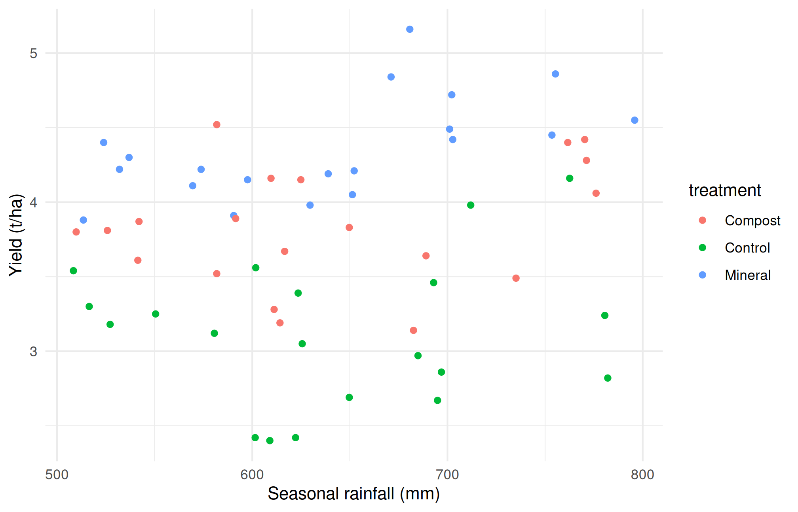

Organize an exploratory analysis around a question, combine summaries with graphics, distinguish observed association from causation, and formulate a defensible follow-up analysis.
8.2 Begin with a question and design
Our teaching question is: Which recorded characteristics are associated with differences in grain yield? The simulated trial has 60 plot records: five blocks, three management treatments, and two varieties with two replicate plots per combination. Nitrogen application is closely linked to management treatment. Thus, an association between nitrogen and yield may also reflect other treatment differences. Soil observations are linked by plot identifier.
EDA is a structured investigation of distributions, patterns, anomalies, and relationships. It generates and refines questions. Repeatedly searching for a small p-value and reporting only the successful test would give a misleading impression of evidence.
library(dplyr)
Attaching package: 'dplyr'
The following objects are masked from 'package:stats':
filter, lag
The following objects are masked from 'package:base':
intersect, setdiff, setequal, union
library(ggplot2)crop <-read.csv("data/crop_trial.csv")soil <-read.csv("data/soil.csv")dat <-left_join(crop, soil, by ="plot_id")stopifnot(nrow(dat) ==60, !anyDuplicated(dat$plot_id))colSums(is.na(dat))
dat |>group_by(treatment, variety) |>summarise(n =n(), mean =mean(yield_t_ha), sd =sd(yield_t_ha),.groups ="drop")
# A tibble: 6 × 5
treatment variety n mean sd
<chr> <chr> <int> <dbl> <dbl>
1 Compost A 10 3.72 0.450
2 Compost B 10 3.95 0.339
3 Control A 10 2.92 0.381
4 Control B 10 3.32 0.518
5 Mineral A 10 4.32 0.386
6 Mineral B 10 4.39 0.302
Look for balance, within-group variation, block shifts, and unusual observations. A high-yielding treatment in one block may behave differently elsewhere. A graph of every plot is more informative than treatment means alone.
Figure 8.1: Exploratory relationships in simulated observations; grouping is retained to reveal possible confounding.

Figure 8.2: Exploratory relationships in simulated observations; grouping is retained to reveal possible confounding.
These relationships need scientific interpretation. Does the predictor precede the response? Was it manipulated or only measured? Are measurements at the same spatial scale? In a real trial, assigning the same weather-station value to many plots does not create independent rainfall replicates. The teaching dataset varies plot-level water exposure for illustration; this must not be mistaken for many independent weather stations.
8.5 Write an EDA memo
An effective memo states the question, source and design, cleaning decisions, two or three supported patterns, and their limitations. For example: “Treatment-specific plots suggest differences in yield, with additional variation among blocks. Nitrogen and treatment are linked, so their separate effects cannot be inferred from a pooled scatter plot. A model should represent the experimental design before adding exploratory predictors.”
Do not invent numerical findings in prose. Extract values from your executed summaries and identify the relevant table or figure. Separate what the data show from what you propose as an explanation.
8.6 From an agricultural question to a sequence of comparisons
A common difficulty in EDA is deciding where to begin. Students often calculate every available summary and draw several graphs, but cannot explain why each was needed. A more useful approach is to translate the question into a small sequence of comparisons.
For our yield question, begin with the response: is yield measured on the same basis for every plot? Next inspect treatment and variety balance. Then examine whether block differences are large enough to affect pooled comparisons. Finally examine measured predictors such as soil nitrogen. This order prevents a persuasive scatter plot from distracting us from an error in the underlying experimental table.
The table shows how many observations contribute to each block summary. The graph retains treatment information. If a block appears high-yielding, ask whether all its treatments tend to be higher or whether the pattern is driven by one treatment. An overall block mean alone cannot answer that second question.
8.7 Marginal patterns and conditional patterns
A marginal comparison combines observations over other variables. A conditional comparison examines a relationship within specified groups or after accounting for specified predictors. The distinction matters when varieties or management practices occur under different environmental conditions.
Imagine that improved seed is used mainly on irrigated farms and local seed mainly on rainfed farms. A marginal difference in yield between seed types includes differences in water availability. A graph stratified by irrigation status may reveal a smaller seed difference, a larger one, or even a reversal. This is a problem of the comparison being made, not a software malfunction.
In our simulated trial, treatment and nitrogen application are linked by construction. The following table makes that relationship visible before any regression is fitted.
dat |>group_by(treatment) |>summarise(mean_nitrogen =mean(nitrogen_kg_ha),minimum_nitrogen =min(nitrogen_kg_ha),maximum_nitrogen =max(nitrogen_kg_ha), .groups ="drop")
# A tibble: 3 × 4
treatment mean_nitrogen minimum_nitrogen maximum_nitrogen
<chr> <dbl> <dbl> <dbl>
1 Compost 64.1 56.5 68.8
2 Control 24.3 10.2 30.6
3 Mineral 99.2 87.7 105
If groups occupy largely separate nitrogen ranges, a model claiming to estimate a treatment effect “at the same nitrogen rate” may rely on comparisons with little support in the observed data. Including both variables in a formula does not automatically solve that lack of overlap. Describe it in the EDA memo so the eventual model is judged against the actual information available.
8.8 Recording exploratory decisions
Keep a short analysis diary. Record which patterns prompted a transformation, a subgroup comparison, or a proposed model. For example: “The initial histogram suggested a long upper tail, so I compared the original and logarithmic scales.” This is more transparent than presenting the final choice as if it had been specified before the observations were examined.
An exploratory plot may reveal an unexpected association worth studying. It is appropriate to report that observation as exploratory and propose a follow-up experiment. It is inappropriate to search many subsets, keep only the strongest association, and describe its ordinary p-value as though only one question had been asked.
There is also a difference between a data limitation and an analytical limitation. A missing weather-station identifier is a data limitation that may prevent assessment of clustering. Choosing not to fit a sophisticated model because it is beyond this course is an analytical boundary. State both clearly. A thoughtful descriptive conclusion is preferable to an inferential claim that the dataset cannot support.
8.9 Practical 8B and exercises
Prepare a one-page EDA memo with a grouped table and two figures.
Identify one apparent relationship that could be confounded and explain the mechanism.
Write a confirmatory question that would require a new experiment or independent dataset.
Explain why selecting only the five highest-yielding plots cannot identify the best management practice for all farms.
Chapter review. EDA is a disciplined way to learn from data and uncover design problems. It does not turn observational patterns into causal effects.
8.10 Live R laboratory
Explore before explaining
Edit the code, then select Run R. The first run downloads R into your browser and may take a little time. Copy code also lets you use this example in RStudio.
Investigate. Compare the centres and the overlap. Read ?PlantGrowth in RStudio for the dataset context before making an agricultural interpretation.
From the browser to your practical notebook
Record the input you changed, the output you obtained, and your interpretation. These live examples use base R and work independently. The full chapter examples, including package-based analyses, remain available with copy buttons for RStudio. Browser objects last until this page is reloaded; Reset code restores the editor text. Internet access is needed on first use; long or interactive desktop tasks belong in RStudio.